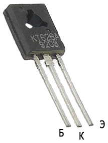

Транзистор КТ626
(КТ626А, КТ626Б, КТ626В, КТ626Г, КТ626Д)
Транзистор КТ626 - эпитаксиально-планарный, структуры p-n-p, кремниевый. Основное применение - переключающие устройства, усилители и генераторы КВ диапазона. Имеет жёсткие выводы и пластмассовый корпус КТ-27-2 (TO-126).
Масса - не более 1 г.
Технические условия - аА0.336.053ТУ.
Импортный аналог: BD140, TIP62B.
Тип прибора указывается на корпусе.


Рис. 1 - Внешний вид, цоколевка и размеры транзистора КТ626
Электрические параметры транзистора КТ626
Таблица 1
| Статический коэффициент передачи тока (Схема с общим эмиттером при Uкэ = 2 В, Iк = 150 мА): |
|
| Т = +25°C: | |
| КТ626А, КТ626Д | 40...250 |
| КТ626Б | 30...100 |
| КТ626В | 15...45 |
| КТ626Г | 15...60 |
| Т = +85°C: | |
| КТ626А, КТ626Д | 40...500 |
| КТ626Б | 30...200 |
| КТ626В | 15...90 |
| КТ626Г | 15...120 |
| Т = -40°C: | |
| КТ626А, КТ626Д | 20...250 |
| КТ626Б | 15...100 |
| КТ626В | 8...45 |
| КТ626ВКТ626Г | 8...60 |
| Граничная частота коэффициента передачи тока (cхема с ОЭ при Uкэ = 10 В, Iэ = 30 мА), не менее: |
|
| КТ626А, КТ626Б | 75 МГц |
| КТ626В, КТ626Г, КТ626Д | 45 МГц |
| Напряжение насыщения К-Э КТ626А, КТ626Б при Iк = 500 мА, Iб = 50 мА и КТ626В, КТ626Г, КТ626Д при Iк = 500 мА, Iб = 100 мА, не более |
1 В |
| Постоянная времени цепи обратной связи на высокой частоте (при Uкб = 10 В, Iэ = 30 мА, f = 5 МГц), не более |
500 пс |
| Ёмкость коллекторного перехода при Uкб0 = 10 В, не более | 150 пФ |
| Обратный ток коллектора не более: | |
| КТ626А: | |
| при Uкб0 = 30 В | 10 мкА |
| при Uкб0 = 45 В | 1 мА |
| КТ626Б, КТ626В при Uкб0 = 30 В и КТ626Г, КТ626Д при Uкб0 = 20 В: |
150 мкА |
| КТ626Б при Uкб0 = 60 В и КТ626В при Uкб0 = 80 В: | 1 мА |
| Обратный ток эмиттера при Uэб0 = 4 В, не более: | |
| КТ626А | 10 мкА |
| КТ626Б, КТ626В, КТ626Г, КТ626Д | 300 мкА |
Таблица 2
| Напряжение К-Б (постоянное): | |
| КТ626А | 45 В |
| КТ626Б | 60 В |
| КТ626В | 80 В |
| КТ626Г, КТ626Д | 20 В |
| Ток коллектора (постоянный) | 500 мА |
| Ток коллектора (импульсный) | 1.5 А |
| Рассеиваемая мощность коллектора (постоянная): | |
| при Тк ≤ +60°C | 6.5 Вт |
| при Тк = +85°C | 4 Вт |
| Тепловое сопротивление переход - корпус | 10°C/Вт |
| Температура p-n перехода | +125°C |
| Рабочая температура (окружающей среды) |
-40...+85°C |
Источники
katod-anod.ru - Транзистор КТ626: КТ626А, КТ626Б, КТ626В, КТ626Г, КТ626Д